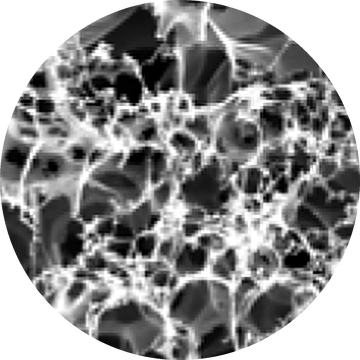
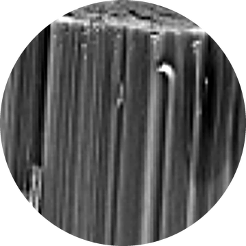
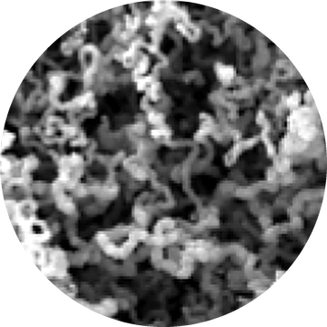

Graphene air filters that kill what they catch
Low-voltage bacterial and viral killing on laser-induced graphene coated filters.
2:13 · ACS AMI 2021
Home / Media Gallery
Each video explains the problem a paper tackles and what it found. Narration is AI-generated.
Low-voltage bacterial and viral killing on laser-induced graphene coated filters.
2:13 · ACS AMI 2021
An adhesive tape with electro- and photothermal heating and antimicrobial action.
2:11 · Carbon 2022
How graphene, nanotube and nanofiber surfaces respond to a simple LED bulb.
2:17 · ACS AMI 2026
New videos are posted on the LITE Laboratory LinkedIn page.
Same element, three very different surfaces. These scanning electron microscope images compare the three materials tested in the LED study.



Images: Welemichael, Sharma et al., ACS Appl. Mater. Interfaces 2026, licensed CC BY 4.0. Cropped.